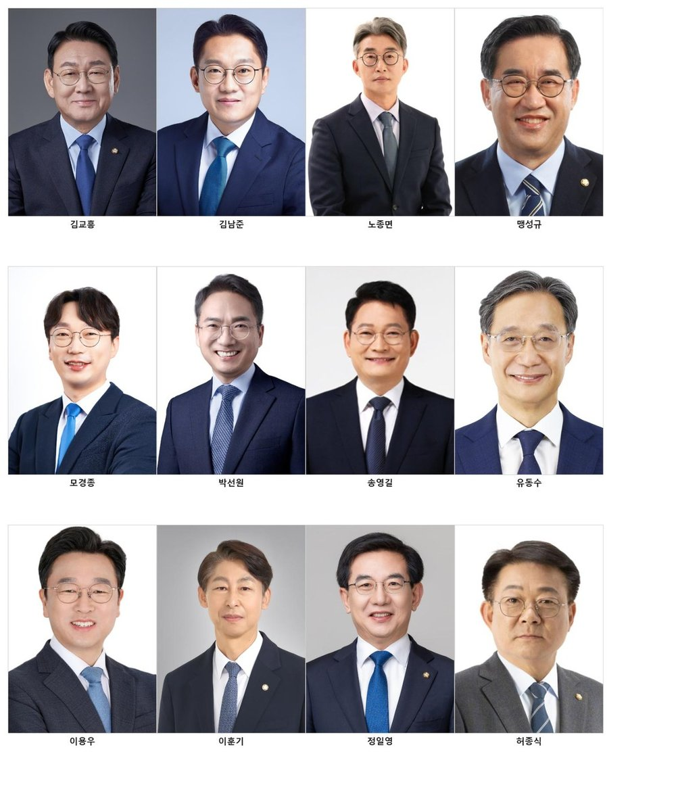
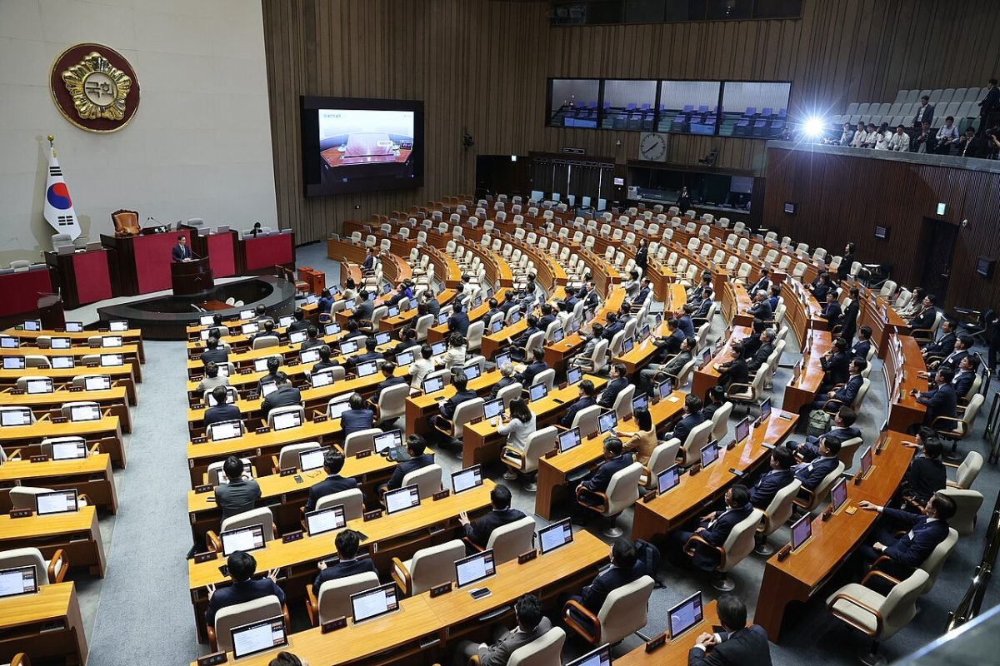

[인천해양주권⑧] 인천 민주당 12명, 성명도 없고 법안도 없다
철회 성명에 이름 올린 24명, 인천 몫은 배준영과 윤상현 둘
22대 국회 항만공사법 개정안 일곱 건, 인천 의원 대표발의는 0건
국민의힘 조승환 의원이 지난 10일 항만 4개 지역 여야 의원에게 연명 의사를 물었다. 인천 의원들에게 온 것은 이름을 올릴지 묻는 물음이었다. 나흘 뒤 답이 나왔다.
9월 14일 국회에서 기자회견이 열렸고 국회의원 24명이 이름을 올렸다. 인천 몫은 배준영과 윤상현 둘이고 민주당 열두 명은 그 자리에 없었다. 같은 주에 노조는 장관 간담회를 걷어찼고 정부는 통합 로드맵 일정을 내놓았다.
1. 이름을 올린 24명, 인천 몫은 둘

성명에 이름을 올린 의원은 부산 18명과 울산 4명과 인천 2명이다. 국민의힘 23명과 무소속 한동훈이다. 항만공사가 있는 네 곳 가운데 여수광양 지역구 의원은 이번 성명에 없다.
인천 지역구 14석 가운데 12석이 민주당인데 그 열둘은 이름을 올리지 않았다.
성명은 통합의 결과부터 짚었다. "중장기 개발계획과 예산편성, 투자결정, 해외사업, 배후단지조성, 지역특화사업 등 핵심 권한이 지역에서 빠져나갈 수밖에 없다"고 했다.
한 대목은 이 연재의 제목과 맞붙는다. "중앙이 획일적으로 결정하는 체제는 효율화가 아니라 지방분권의 후퇴"라고 했다. 이 정부의 간판이 5극3특 균형발전이다.
성명은 지방자치단체장도 짚었다. "광양시만 반대 입장을 밝혔을 뿐 부산·인천·울산·여수시는 제 목소리를 내지 않고 있다"고 적었다. 인천시가 그 넷에 들어 있다.
성명은 항만을 지역 산업의 기반이자 수출입 물류의 관문이라고 적었다. 의원들은 정부에 통합의 경제성과 효율성, 지역경제와 고용 영향을 공개하라고 요구했다. 다섯 항만도시에는 철회를 위한 공동 대응에 나서라고 촉구했다.
2. 성명이 꼽은 권한은 법에 그대로 있다
성명이 꼽은 여섯은 항만공사법 제8조에 있다. 제8조는 공사가 하는 사업을 열세 가지로 나눠 적었다. 제2호가 항만배후단지개발사업이고 제2호의2가 항만재개발사업이다.
제1호는 항만시설의 신설과 유지·보수, 항만의 관리·운영을 공사의 사업으로 정한다. 인천 내항 1·8부두 재개발은 제2호의2에 해당한다. 해양수산부가 사업계획을 고시하고 사업시행자를 지정한 항만재개발사업이다.
제7호는 외국 항만의 조성과 관리·운영이고 성명이 꼽은 해외사업이 여기다. 제6호의2는 남북 간 항만의 조성과 관리·운영을 위한 교류와 협력사업이다. 열세 가지가 모두 공사가 하는 일로 적혀 있다.
제10조는 그 권한을 누가 정하는지 적었다. 공사에 두는 항만위원회가 경영목표와 예산과 사업계획을 의결한다. 기본재산의 취득과 처분도, 장기차입금과 사채 발행도 그 위원회가 정한다.
심의·의결 사항 열셋 가운데 열두 번째가 지사 또는 분사무소의 설치다. 지사를 둘지 말지도 공사의 위원회가 정한다는 뜻이고, 공사가 없어지면 그 위원회도 함께 없어진다.
제4조 제1항은 공사를 법인으로 정하고 제2항은 항만별로 설립한다고 정했다. 예외를 두기는 했으나 그것도 2개 이상 인접한 항만을 관할하는 공사로 한정했다.
부산과 인천과 울산과 여수광양은 인접한 항만이 아니다.
3. 효과가 크지 않다면서 통합부터 정했다
허장 재정경제부 제2차관은 9월 3일 기자회견에서 4개 항만공사를 하나로 묶는다고 발표했다. 전체 공공기관의 약 20%인 109곳을 정비하는 계획의 하나다. 통합 법인의 가칭은 한국항만공사다.
나흘 뒤 같은 차관이 방송에 나왔다. 9월 7일 KTV 「팩트방앗간」에서 "현재로서는 비용절감 효과가 크지 않다"고 했다. 앞으로 생산성을 높이는 데는 효과가 있을 것이라고 덧붙였다.
정부는 9월 3일 통합을 발표하고 다음 날 편익 분석에 착수했다. 4개 항만공사 노조는 결론을 먼저 내고 근거를 뒤에 찾는다며 이를 선통합·후검증이라고 불렀다.
노조가 든 근거는 열다섯 해 전 연구다. 2011년 국토해양부 연구에서 통합에 따른 연간 절감효과가 약 50억원으로 매우 미미한 수준이었다는 것이다. 정부가 스스로 맡긴 연구였다.
통합한 뒤의 효율성은 개별 기관보다 오히려 낮게 나왔다고 노조는 밝혔다.
노조는 과거 정부 연구와 다른 결론을 내리려면 그것을 뒷받침할 새 분석 자료부터 내놓으라고 요구했다. 정부는 아직 그 자료를 공개하지 않았다.
4. 노조는 장관 간담회를 걷어찼다
4개 항만공사 노조는 지난 15일 해양수산부 장관이 주재한 기능개혁 간담회를 집단으로 거부했다. 산하 공공기관 직원대표에게 기능개혁 방안의 의견을 듣는 자리였다. 정부가 직접 마련한 소통 창구를 네 공사가 모두 거부했다.
노조는 "단순한 일정 불참이 아니라 통합 추진에 대한 명시적 보이콧"이라고 밝혔다.
정부 쪽 일정은 그사이 앞으로 갔다. 해양수산부는 공공기관 기능개혁 TF를 꾸렸고 9월 8일 부산에서 첫 회의를 열었다. 4개 항만공사 사장이 모두 참석했다.
남재헌 해양수산부 차관은 그 자리에서 통합 로드맵 초안을 연말까지 만들고 내년 초에 발표하겠다고 밝혔다. 시간이 많지 않고 과업 규모가 크다고도 했다. 지역 항만공사 직원과 물류 업계, 지방자치단체의 협조가 필요하다는 당부도 했다.
법은 아직 그대로다. 통합은 항만공사법을 고쳐야 이뤄지고 그 법을 고칠 자리는 국회다.
로드맵이 나온다는 내년 초까지 남은 시간은 넉 달 남짓이다.
5. 개정안 일곱 건, 인천 의원은 없다

22대 국회에 올라온 항만공사법 개정안은 일곱 건이다. 넷을 하나로 묶는 법안은 그 안에 없다. 일곱 건 가운데 다섯 건을 의원이 대표발의했다.
전재수와 곽규택과 조경태와 어기구와 이종욱이다. 앞의 셋은 부산 지역구였고 어기구는 충남이다. 나머지 둘은 위원장 대안과 정부 제출이고, 지금 국회에 걸려 있는 것은 세 건이다.
인천 의원이 대표발의한 항만공사법 개정안은 한 건도 없다.
넉 달 전에는 달랐다. 민주당 인천 의원들은 지난 5월 17일 공항공사 통합에 반대하는 공동성명을 냈다. 그 성명이 "만에 하나 통합 논의가 진행된다고 하더라도 입법권으로 반드시 막겠다"고 했다.
공항도 항만도 법을 고쳐야 통합된다. 그때 든 것이 입법권이었고 지금 그 입법권으로 낸 항만공사법 개정안은 한 건도 없다. 성명도 없고 법안도 없다.
정부는 효과가 크지 않다고 스스로 말하면서 통합을 정했다. 그 법을 고칠 국회의 다수가 민주당이고 인천 12석도 민주당이다. 막을 힘은 이번에도 인천 안에 있다.
참고문헌
- 국회 의안정보시스템(2026), 『제22대 국회 항만공사법 일부개정법률안 접수 현황』 7건, 2026.09.17. 조회. https://likms.assembly.go.kr/bill/main.do
- 대한민국 국회(2026), 『국회의원현황 — 제22대, 인천, 더불어민주당 검색결과 12명』, 2026.09.19. 조회. https://www.assembly.go.kr/portal/cnts/cntsCont/dataA.do?cntsDivCd=NAAS&menuNo=600137
- 『항만공사법』 제4조 법인격 등, 제8조 사업, 제10조 항만위원회의 설치. 국가법령정보센터, 2026.09.17. 조회. https://www.law.go.kr/법령/항만공사법
- 해양수산부(2025), 『인천항 내항 1·8부두 항만재개발사업 사업계획 확정』 보도자료. https://www.mof.go.kr/doc/ko/selectDoc.do?docSeq=63413&menuSeq=971&bbsSeq=10
- 국무총리실(2026), 『행정, 공공기관 이전 및 공공기관 기능 개혁 관련 기자회견』, 대한민국 정책브리핑, 2026.09.03. https://www.korea.kr/briefing/policyBriefingView.do?newsId=156780091
- 복지TV부울경방송(2026), "국민의힘 의원들 '4대 항만공사 통합 즉각 철회'···'지역 항만 자율성·국가 경쟁력 훼손'", 2026.09.14. https://www.wbcb.co.kr/news/articleView.html?idxno=106085
- 송기욱(2026), "野 부산·인천·울산 의원들 '李정부 항만공사 통합 반대···전재수 어디 있나'", 『뉴스핌』, 2026.09.14. https://www.newspim.com/news/view/20260914000734
- 정혜리(2026), "'항만공사 통합 저지' 여야 지역의원 뭉치나", 『인천일보』, 2026.09.10. https://www.incheonilbo.com/news/articleView.html?idxno=1331756
- 박진홍(2026), "해수부 '항만공사 통합 구체화해 내년 초 발표할 것'", 『노컷뉴스』, 2026.09.08. https://www.nocutnews.co.kr/news/6575038
- 이복수(2026), "4개 항만노조, '정부 비용절감 크지 않다면서 통합부터' 비판", 『일간경기』, 2026.09.09. https://www.1gan.co.kr/news/articleView.html?idxno=398642
- 김경민(2026), "울산 등 4대 항만공사 노조, 해수부 장관 간담 집단 보이콧", 『울산신문』, 2026.09.15. https://www.ulsanpress.net/news/articleView.html?idxno=583162
- 이정우(2026), "민주당 인천 지역 후보자들 '인천국제공항 통합 막겠다'", 『한국경제』, 2026.05.17. https://www.hankyung.com/article/2026051713537
[사진 출처]
- [사진1] 대한민국 국회 누리집 국회의원현황 의원 공식 사진 열두 장을 묶음, 공공누리 제1유형(출처표시). https://www.assembly.go.kr
- [사진2] 대한민국 국회, "22nd National Assembly First-Elected Members' Legislative Research Conference 02.jpg", 위키미디어 공용, 공공누리 제1유형(출처표시), 2024년 5월 21일 촬영
※ 이 기사는 AI 프로그램 클로드를 활용해 작성했습니다.
관련기사
- [인천해양주권⑦] 민주당 인천 국회의원 12명 또 침묵 방관
- [인천해양주권⑥] 이재명 정부 항만공사 통합, 부산항 빚 4조4121억원 인천에 전가
- [인천해양주권⑨] 7월에 맡기고 9월에 없앤다, 인천 해상풍력 부두
- [인천해양주권⑩] 부산은 409억, 인천은 진흥원 용역비 5억도 못 받아
저작권자 © AI경세제민 무단전재 및 재배포, AI학습 및 활용 금지